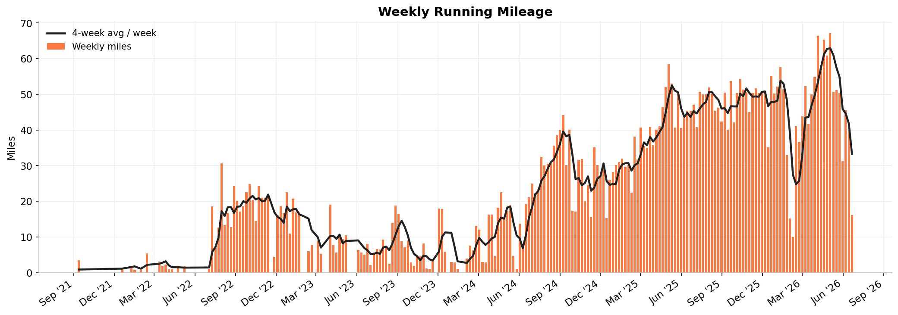
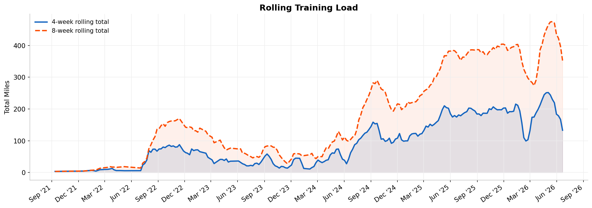
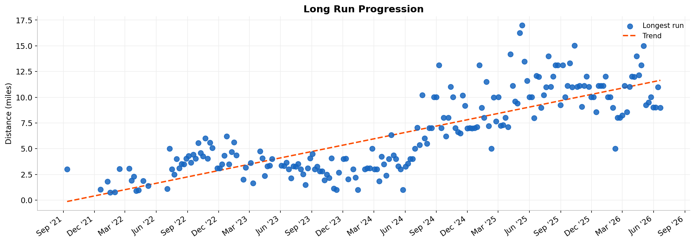
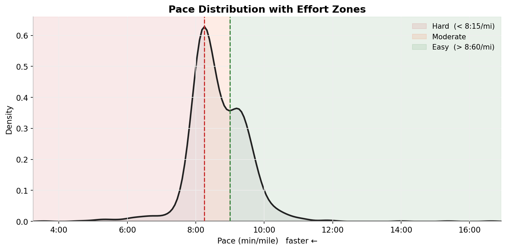
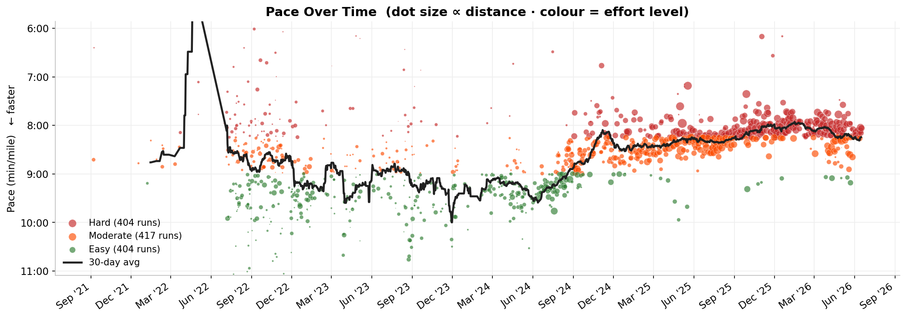
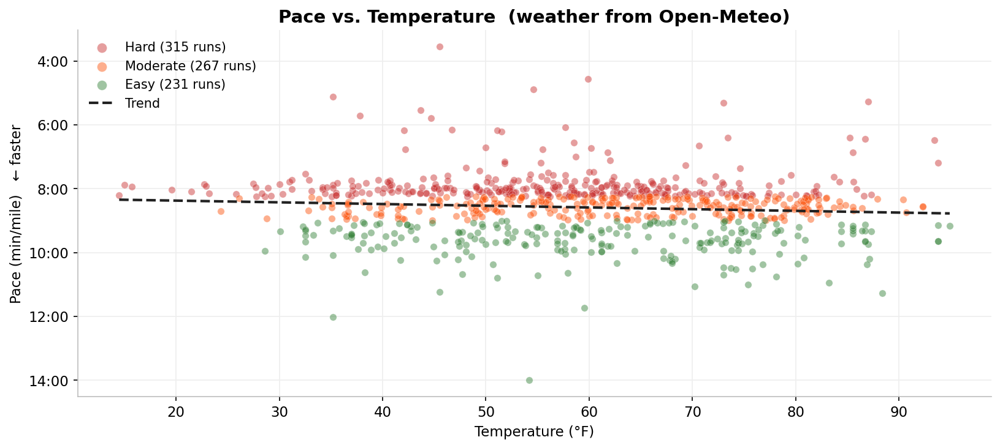
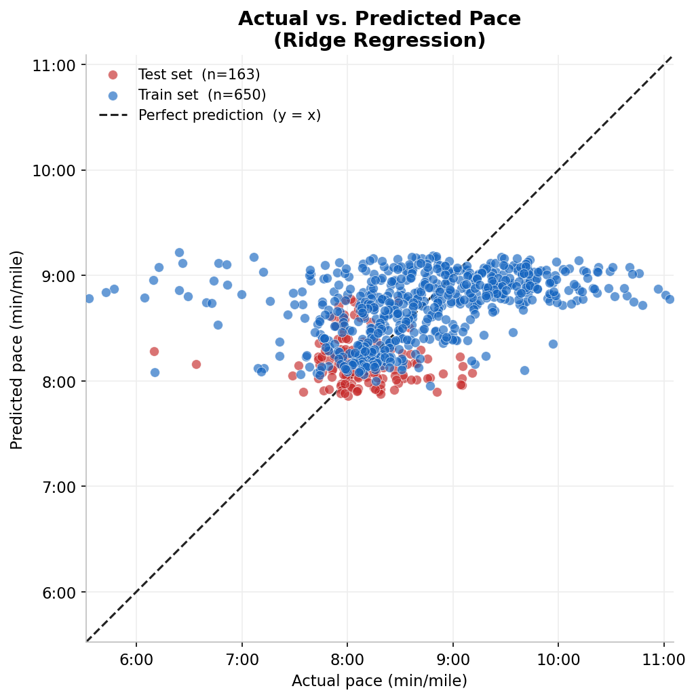

Training Volume
Almost 5 years of weekly mileage. The rolling averages smooth out the noise and show when I was actually building fitness vs. just getting runs in.


Long Runs & Pace Distribution
How my long runs have changed over time, and where my pace naturally falls. Runs are split into easy, moderate, and hard based on pace tertiles across the full dataset.


Pace Over Time
Every run, plotted. Bigger dots are longer runs. The trend line is the most interesting thing here — my pace has been getting faster.

Pace vs. Temperature
Historical weather for each run pulled from Open-Meteo using the GPS start coordinates. Temperature and humidity both ended up in the model as features.

Can I Predict My Pace?
I built a model to see if recent training data could predict how fast I'd run. The honest answer: not really. But why it fails is more interesting than if it had worked.

What I built
Ridge regression trained on training-load features — rolling weekly mileage, days since last run, temperature, humidity, and run distance. Ridge handles correlated inputs better than standard linear regression, which matters since weekly and monthly mileage obviously move together.
The split is chronological: train on older runs, test on the most recent 20%. That's the honest way to do it — a random split would let future data leak into training.
Features
| Feature | What it captures |
|---|---|
| rolling_28d_miles | Fitness base — strongest signal |
| rolling_7d_miles | Recent fatigue |
| log_distance | Longer runs → slower pace |
| temperature_f | Hot = slower |
| humidity_pct | Humid = slower |
| days_since_last_run | Rest / recovery |
How It Works
Five Python scripts that run in sequence — one command from raw Strava export to all the charts above.
Clean
Load the raw CSV, keep only runs, convert km to miles, drop anything with a pace outside 3:00–30:00/mile.
Weather
Parse start GPS from each .gpx / .fit.gz file, cluster into location buckets, fetch hourly temp and humidity from Open-Meteo.
Features
Build rolling mileage windows (7, 28, 56 days). A shift(1) makes sure no future data leaks in. Label each run Easy / Moderate / Hard.
Model
Train Ridge regression on the first 80% of runs, test on the most recent 20%. Standardise features so I can compare importance.
Visualise
Seven charts with Matplotlib and seaborn. I wanted them to look clean enough to actually put in a portfolio.